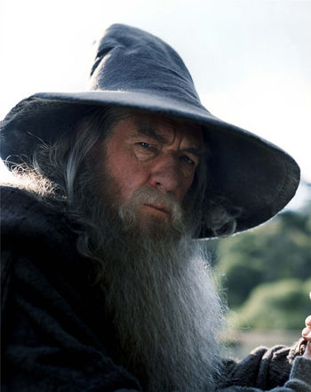

Gandalf
BIO: He is a member of the Istari
order, as well as leader of the Fellowship of the Ring and
the army of the West.
Portrayed by: Ian McKellen
Species: Maia
Title: Servant of the Secret Fire,
Elf-friend, Istar (Wizard), Wielder of the Flame of Anor,
Ring-bearer